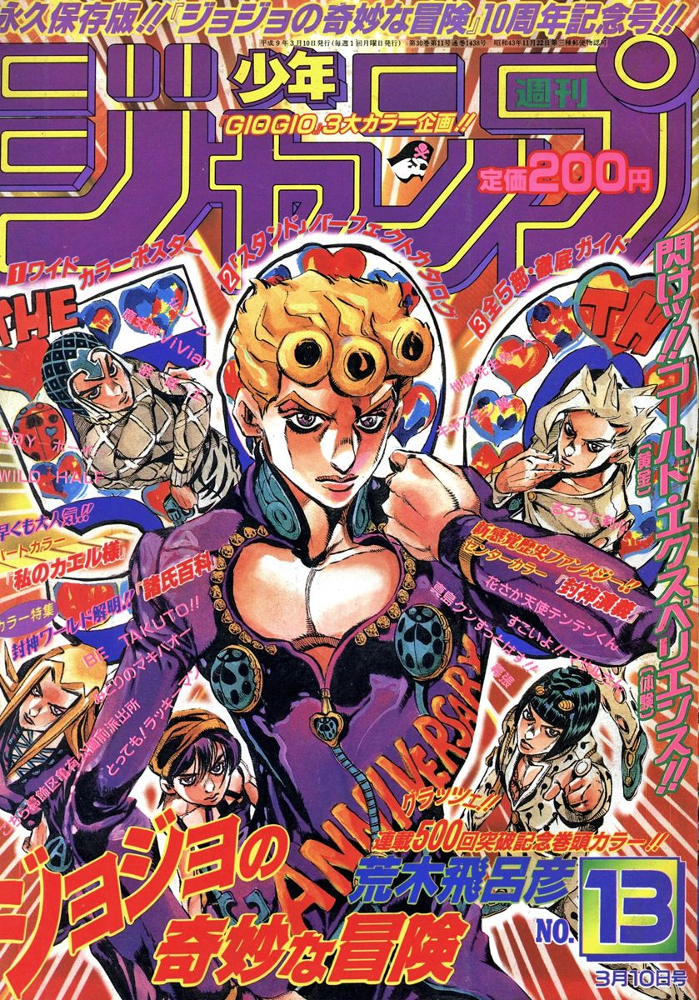
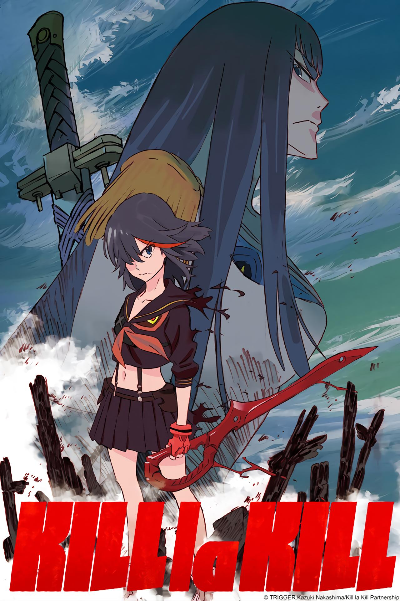
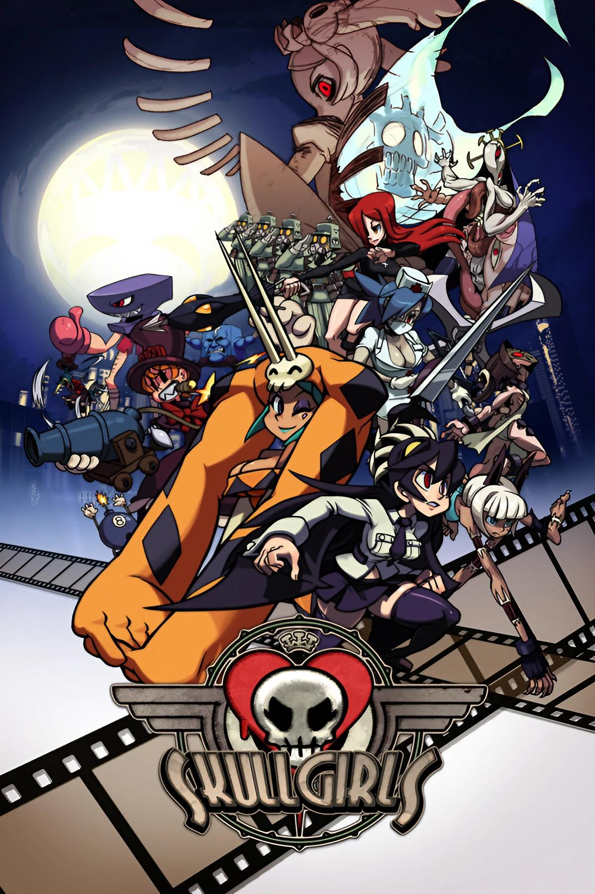

Lista do melhor Mangá, Anime e Jogo (PARA MIM)

Vento Aureo (黄金の風 Ōgon no Kaze), traduzido em inglês como Golden Wind é a quinta parte de JoJo's
Bizarre Adventure, serializada na Weekly Shōnen Jump de dezembro de 1995 a abril de 1999. O arco
abrange um total de 155 capítulos e ocorre após Diamond is Unbreakable.

Kill la Kill (キルラキル, Kiru Ra Kiru?) foi uma série de anime produzida pelo Studio Trigger. A
história é sobre Ryuko Matoi, uma estudante que quer vingar a morte de seu pai, e vai em busca do
assassino que a coloca em conflito violento com Satsuki Kiryuin, a presidente do conselho estudantil
da Academia Honnouji, e o império da moda de sua mãe.

Very Horny Game